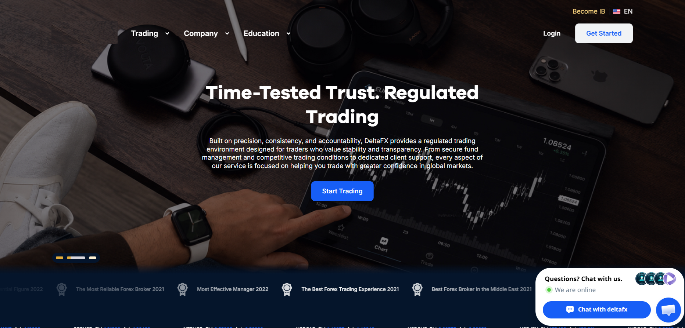
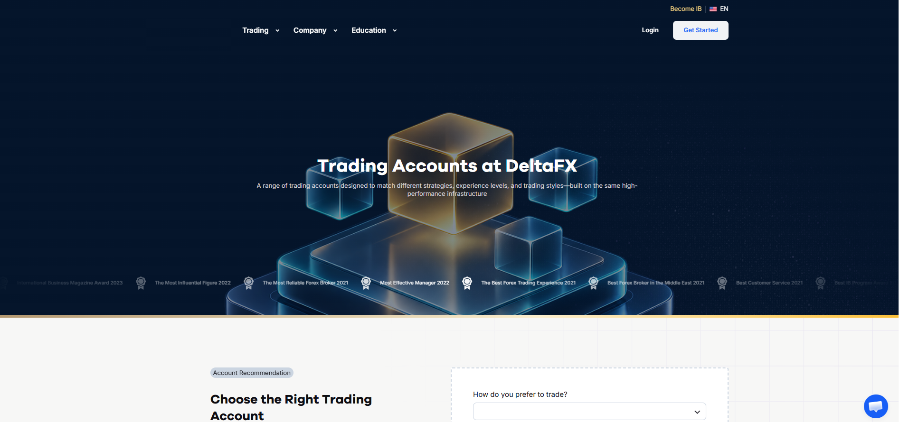
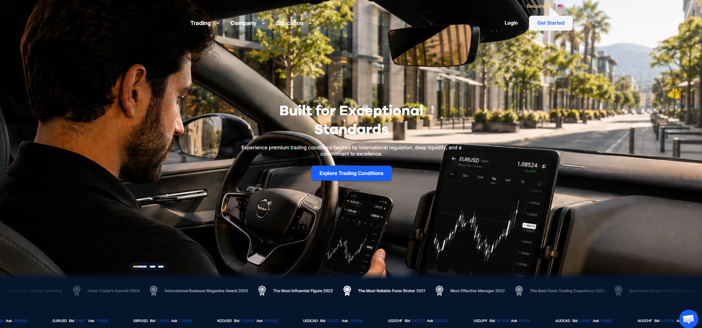

Websites / Product Work
FinTech Corporate Web Experience
Responsive brokerage web journeys connecting trading information, account actions and managed site content.

DeltaFX homepage: brokerage positioning, navigation and trading-service entry points.
Product Overview
A responsive FinTech corporate web experience introducing brokerage services and connecting visitors with trading information and account access.
Audience & Experience
Responsive navigation and interactive service and account entry points support customer journeys across device sizes. Administrative content management keeps the brokerage’s public information organized and maintained.
Professional Context
I worked at DeltaFX in Product Management and Business Intelligence from August 2020–March 2023. These website examples provide company and customer-facing context alongside that experience.
Product Screens
Explore the interfaces and workflows below.



View full image ↗

View full image ↗